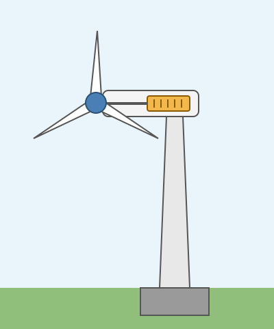

Energie und Strom
Mit einem KI-Tutor lernen
Ein KI-Tutor erklärt dir diese Seite und hilft dir bei den Übungen. Wähl deinen Assistenten:
Mit Claude öffnen Mit ChatGPT öffnen Mit Mistral Vibe öffnen
Du nutzt dein eigenes Konto beim Anbieter. Der Assistent ist kein Angebot von lernapps.net: lernapps liefert nur Inhalte und Übungen. Die Wahl gilt für alle Seiten, nur auf diesem Gerät.
Überblick
Woher kommt der Strom aus der Steckdose? Hier lernst du, wie ein Windrad Strom erzeugt und was ein Generator macht. Du erfährst, wie ein Elektroauto fährt und was fossile von erneuerbaren Energien unterscheidet. Am Ende geht es darum, wie du Strom sparst.
Das solltest du wissen
- Generator
Ein Generator wandelt Bewegungsenergie in elektrische Energie um. Er nutzt einen Magneten und Spulen aus Draht. Bewegt sich ein Draht durch ein Magnetfeld, entsteht eine elektrische Spannung. Der Elektromotor macht es umgekehrt: Er wandelt elektrische Energie in Bewegung um.
Das Windrad: Der Wind drückt auf die Rotorblätter und dreht den Rotor. Der Rotor treibt den Generator an. Der Generator erzeugt Strom, und der Strom fließt ins Stromnetz. Der Generator steckt in der Gondel ganz oben auf dem Turm.

Teile eines Windrads: Rotorblätter und Nabe (zusammen der Rotor), Gondel mit Generator, Turm und Fundament.
Quelle: eigene Zeichnung. Lizenz: CC-BY-4.0.Warum sind die Türme so hoch?
Mit der Höhe wird der Wind schneller. Ein hoher Turm bringt den Rotor also in stärkeren Wind. Auch größere Rotoren bringen mehr Strom. Die meisten modernen Windräder haben drei Rotorblätter.
- Solarzelle
Eine Solarzelle wandelt Licht direkt in elektrische Energie um. Meistens besteht sie aus Silicium. Viele Zellen zusammen bilden ein Solarmodul.
Das Elektroauto hat einen Elektromotor statt eines Verbrennungsmotors. Der Strom dafür kommt aus einem großen Akku. Beim Bremsen kann der Motor einen Teil der Bremsenergie in den Akku zurückgeben. Die Reichweite hängt auch von der Außentemperatur ab. Bei Kälte laufen Heizung und Klimaanlage und nehmen Energie aus dem Akku. Dann kommt das Auto nicht so weit.
- Fossile Brennstoffe
Kohle, Erdöl und Erdgas heißen fossile Brennstoffe. Sie sind vor Millionen Jahren aus den Resten von Pflanzen und Tieren entstanden. Die Vorräte sind begrenzt. Beim Verbrennen entsteht Kohlenstoffdioxid, ein Treibhausgas.
- Erneuerbare Energien
Erneuerbare Energien kommen aus Quellen, die nicht verbraucht werden oder sich schnell erneuern. Dazu gehören Sonne, Wind, Wasser, Biomasse (zum Beispiel Holz) und die Wärme aus der Erde.
So sparst du Strom
- Schalte das Licht aus, wenn du den Raum verlässt.
- LED-Lampen sind typisch etwa viermal so sparsam wie Glühlampen.
- Schalte Geräte ganz aus. Im Standby verbrauchen vor allem ältere Geräte weiter Strom.
- Ein Ladegerät in der Steckdose verbraucht auch ohne Handy Strom.
- Eine Waschmaschine füllst du am besten ganz voll.
So gehst du bei „Welche Aussage ist falsch?“ vor
Frage: Welche Aussage über Kohle, Erdöl und Erdgas ist falsch?
- Sie sind aus Resten von Pflanzen und Tieren entstanden.
- Sie wachsen in wenigen Jahren wieder nach.
- Beim Verbrennen entsteht Kohlenstoffdioxid.
So denkst du: Zwei Aussagen stimmen, eine nicht. Gehe jede einzeln durch.
- Aussage 1: Das gehört zur Entstehung der fossilen Brennstoffe. Sie stimmt.
- Aussage 2: Die Brennstoffe sind vor Millionen Jahren entstanden. In wenigen Jahren wachsen sie nicht nach, die Vorräte sind begrenzt. Sie ist falsch.
- Aussage 3: Beim Verbrennen entsteht Kohlenstoffdioxid. Sie stimmt.
Antwort: Aussage 2. Achte auf Wörter wie „immer“, „nur“ und „in wenigen Jahren“. Sie machen eine Aussage oft falsch.
Übung
Übung
Lösung
Richtige Antwort: A – Rotorblatt; B – Nabe; C – Gondel; D – Generator; E – Turm; F – Fundament
Die Rotorblätter sitzen an der Nabe. Dahinter liegt die Gondel mit dem Generator. Der Turm trägt die Gondel und steht auf einem Fundament.
Mehr dazu:
Übung
Lösung
Richtige Antwort: 1. Der Wind drückt auf die Rotorblätter., 2. Der Rotor dreht sich., 3. Der Rotor treibt den Generator an., 4. Der Generator erzeugt Strom., 5. Der Strom fließt ins Stromnetz.
Der Wind setzt den Rotor in Bewegung. Der Generator wandelt diese Bewegung in elektrische Energie um, und der Strom geht ins Netz.
Mehr dazu:
Übung
Lösung
Ein Generator wandelt Bewegungsenergie in elektrische Energie um.
Das stimmt. Im Windrad treibt der Rotor den Generator an.
Der Turm eines Windrads ist hoch, weil der Wind dort oben schwächer weht. richtige Antwort
Das ist falsch. Mit der Höhe wird der Wind schneller, darum steht der Rotor weit oben.
Eine Solarzelle wandelt Licht direkt in elektrische Energie um.
Das stimmt. Viele Solarzellen bilden zusammen ein Solarmodul.
Ein hoher Turm bringt den Rotor in stärkeren Wind. Darum ist die Aussage über den schwächeren Wind falsch.
Mehr dazu:
Übung
Lösung
Seine Reichweite ist im Sommer und im Winter immer genau gleich.
Im Winter laufen Heizung und Klimaanlage und nehmen Energie aus dem Akku. Die Reichweite wird dann kleiner.
Beim Bremsen geht alle Bewegungsenergie verloren.
Der Elektromotor kann beim Bremsen einen Teil der Energie in den Akku zurückgeben.
Ein Elektromotor treibt es an, und der Strom kommt aus einem Akku. richtige Antwort
Das stimmt. Der Akku wird an einer Ladestation oder Steckdose geladen.
Ein Elektroauto fährt mit einem Elektromotor und einem Akku. Die Reichweite hängt unter anderem davon ab, wie viel Energie die Heizung braucht.
Mehr dazu:
Übung
Lösung
Richtige Antwort: Die Aussage stimmt nicht.
Fossile Brennstoffe sind vor Millionen Jahren aus Resten von Pflanzen und Tieren entstanden. Ihre Vorräte sind begrenzt. Sonne, Wind und Wasser dagegen gehören zu den erneuerbaren Energien.
Mehr dazu:
Übung
Lösung
Das Ladegerät dauerhaft in der Steckdose lassen.
Ein Ladegerät in der Steckdose verbraucht auch dann Strom, wenn kein Handy angeschlossen ist.
Eine LED-Lampe statt einer Glühlampe einsetzen. richtige Antwort
LED-Lampen sind typisch etwa viermal so sparsam wie Glühlampen.
Das Licht in einem leeren Zimmer anlassen.
Eine brennende Lampe verbraucht Strom, auch wenn niemand im Raum ist. Schalte sie schon für wenige Minuten aus.
Sparsame Lampen, abgeschaltete Geräte und ausgesteckte Ladegeräte senken den Stromverbrauch.
Mehr dazu: